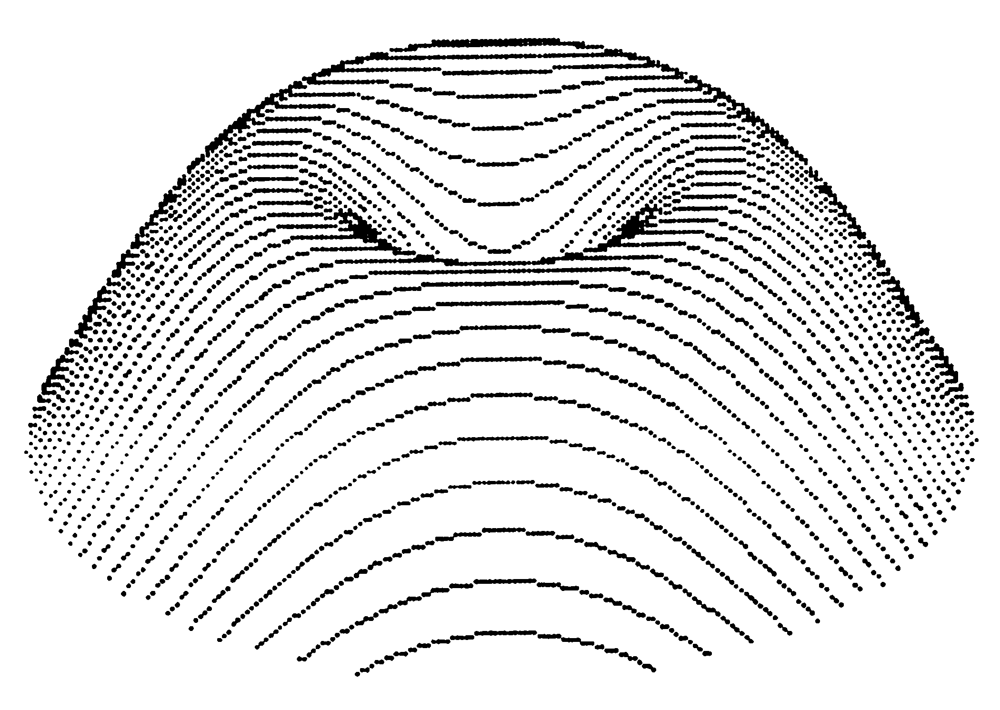

In der Kürze liegt die Würze
Mit dieser kleinen Routine können Sie sehr schnell mathematische Funktionen dreidimensional auf den Bildschirm zaubern. Das Programm läßt sich an jede Grafikerweiterung anpassen und in jedes Basic-Programm einbauen.
Das hier vorgestellte Programm dürfte wohl das kürzeste sein, das eine mathematische Funktion dreidimensional darstellt. Obwohl es so kurz ist, werden die verdeckten Linien nicht gezeichnet (Bild 1). Außerdem ist die Geschwindigkeit, mit der die Funktion berechnet wird, für ein Programm dieser Art extrem hoch. Je nach Umfang der mathematischen Funktion benötigt es nicht mehr als 5 bis 15 Minuten. Doch nun zum Programm (Listing 1), das in Simons Basic geschrieben wurde. Zeile 0 muß jeweils die mathematische Funktion enthalten. Seien Sie nicht enttäuscht, wenn der Computer nach dem Start mit RUN einen »Overflow-, Division By Zero- oder Illegal Quantity-« Error meldet. Eine Routine, die die Bereichseinhaltung überwacht, hätte einerseits Speicherplatz gekostet und andererseits die Ausführungsgeschwindigkeit auf etwa 1 bis 1,5 Stunden verlangsamt. Das Programm läßt sich übrigens an jede Grafikerweiterung anpassen. Hier eine Befehlsgegenüberstellung für das im Sonderheft 4/85 (Grafik) veröffentlichte Programm »Grafik 2000«:

| Simons Basic | Grafik 2000 |
|---|---|
| HIRES 1,0 | CLEAR:MODE 1:COLOR 1,0 |
| PLOT X,Y,1 | SPOINT X,Y |
Außerdem muß, wenn Sie mit Grafik 2000 arbeiten, in der Zeile 4 zwischen »NEXTI« und »END« noch der Befehl »MODE 0« eingefügt werden. Wie Sie selbst sehen, ist das Listing 1 sehr komprimiert. Damit der Aufbau der dreidimensionalen Funktion besser verstanden wird, zeigt Listing 2 die entwirrte (aber langsamere) Version. In Tabelle 1 sind einige Funktionen aufgeführt, die sich je nach Bedarf ändern lassen. Durch diese Tabelle sollen Sie ein Gefühl für die zulässigen Zahlenbereiche bekommen.
| 0 DEFFNA(E)=-COS(PI*E/90)*TAN(PI*E/320+1)+1 |
| 0 DEFFNA(E)=15*ABS(LOG(E/70+.5))-LOG(E*20+.5) |
| 0 DEFFNA(E)=INT(E)+110 |
| 0 DEFFNA(E)=ABS(E-67)-20 |
| 0 DEFFNA(E)=90*EXP(-E*E/1500) |
| 0 DEFFNA(E)=38*(SIN(E/24)+.48*SIN(3*E/24))+20 |
| 0 DEFFNA(E)=E-80 |
| 0 DEFFNA(E)=85/(E/25+1) |
| 0 DEFFNA(E)=30*COS(PI*E/15) |
| 0 DEFFNA(E)=40*COS(PI*E/55) |
| 0 DEFFNA(E)=10*ABS((Z*Z)/3000)-1) |
| 0 DEFFNA(E)=TAN(PI*E/90+1)+1 |
| 0 DEFFNA(E)=TAN(PI*E/320+1)+1 |
| 0 DEFFNA(E)=30*COS(LOG(E/30+.01)) |
| 0 DEFFNA(E)=-50*ATN(LOG(E/30+.01)) |
| 0 DEFFNA(E)=.5*E*E/(SQR(ABS(E*E-1))+.1) |
| 0 DEFFNA(E)=30*ATN(1/(E+.1))+10*PI/2 |
| 0 DEFFNA(E)=60*SIN(E/30)+10 |
0 DEFFNA(E)=60*SIN(E/30)+10 1 HIRES1,0:A=160:B=60:FORX=0TO-100STEP-1:C=-60:D=5*INT(SQR(10000-X*X)/5) 2 FORY=DTO-DSTEP-5:E=25+FNA(SQR(X*X+Y*Y))-.6*Y 3 IFE>CTHENC=E:PLOTA+X,B+E,1:PLOTA-X,B+E,1 4 NEXTY,X:FORI=1TO10000:NEXTI:END
0 DEFFNA(E)=60*SIN(E/30)+10 1 HIRES1,0 2 A=160:B=60 3 FORX=0TO-100STEP-1 4 : C=-60:D=5*INT(SQR(10000-X*X)/5) 5 : FORY=DTO-DSTEP-5 6 : E=25+FNA(SQR(X*X+Y*Y))-.6*Y 7 : IFE>CTHENC=E:PLOTA+X,B+E,1:PLOTA-X,B+E,1 8 : NEXTY 9 NEXTX 10 FORI=1TO10000:NEXTI:END